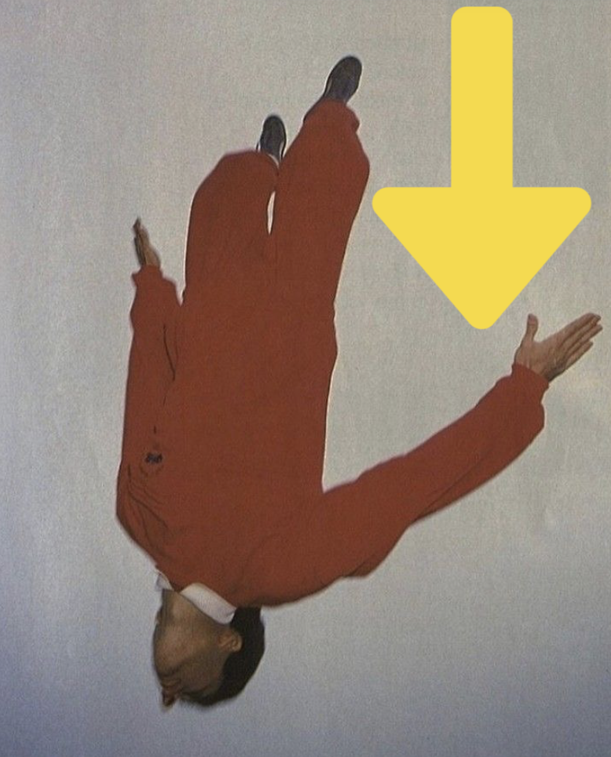
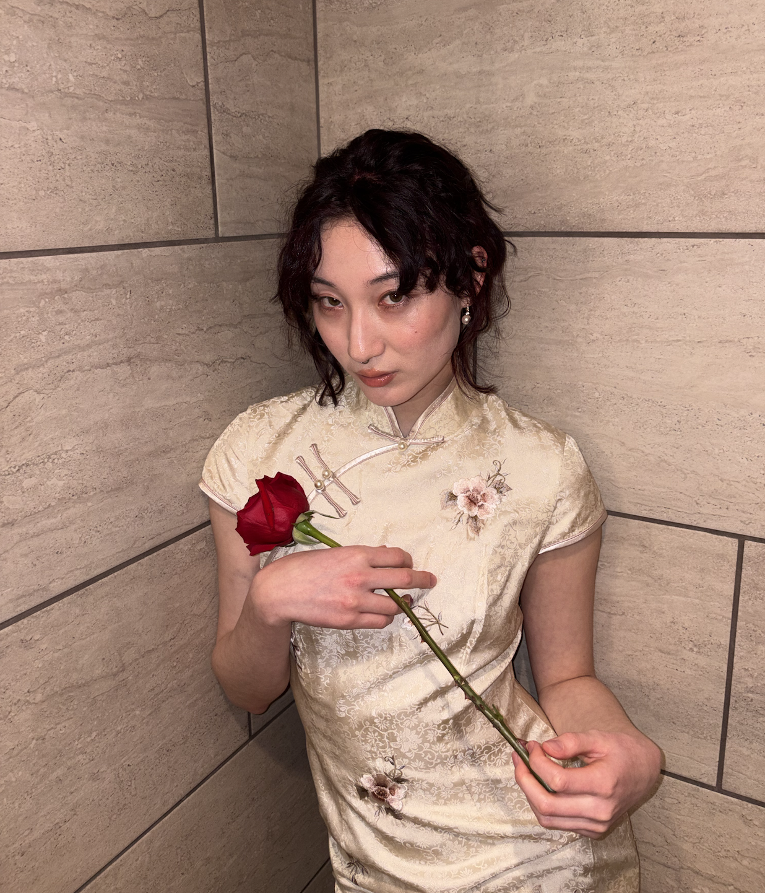
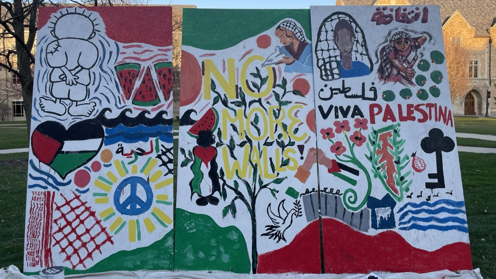
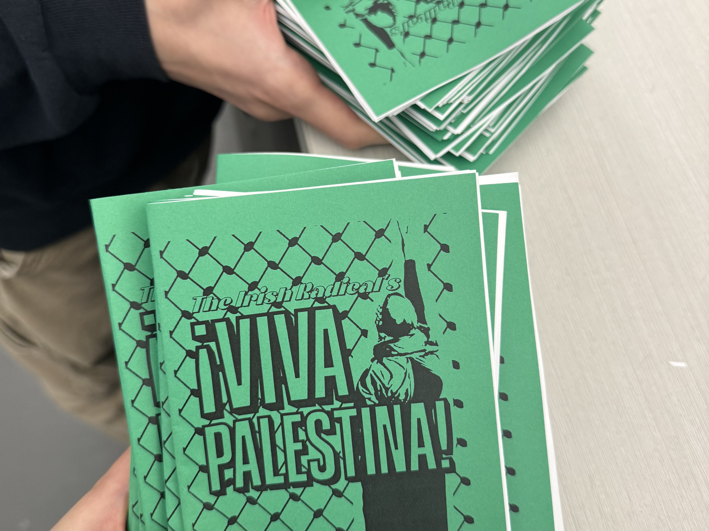
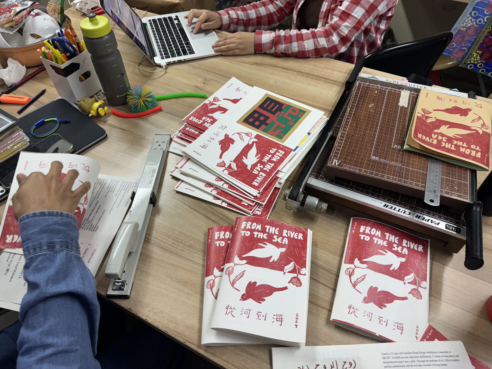
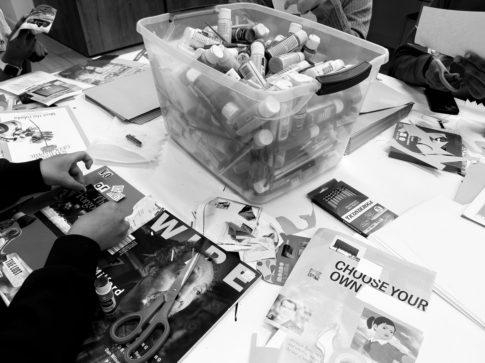

who am i
??!

雷岸汀
polisci & peace studies grad @notre dame
watching: jia zhang-ke
reading: frantz fanon
listening: geordie greep
I will be working on a film set in LA
and the SDIFF!


hi i'm
who am i
polisci & peace studies grad @notre dame
watching: jia zhang-ke
reading: frantz fanon
listening: geordie greep
I will be working on a film set in LA
and the SDIFF!

my research
research assistant for prof ernesto verdeja in genocide/mass atrocity prevention and structural efficacy of the UN/OAS.
learn more here
summer 2024: granada, spain and xinjiang, china for a comparative study of settler colonial societies--a continuation of my experience in the west bank restoring a palestinian farm in 2023. decolonizing knowledge and power in barcelona, spain with ruthie gilmore, linda alcoff, ramón grosfoguel, and nelson maldonado-torres, a seminar interrogating modernity and coloniality.
summer 2025: critical muslim studies class in granada, spain, exploring islam as a feminist and decolonial epistemic perspective.
on university crackdowns and the targeting of institutions for knowledge production. advisors: profs sebastian rosato and atalia omer. presented at ucsd research conference and kroc peace conference.
visited westville correctional facility every friday for facilitated dialogue around carceral system. co-wrote/produced play with incarcerated men on the roles of race and class in sentencing procedures.
my films/video art/etc.
bālèsītǎn (2023)
shot with sony handycam HDR-PJ220E
coke kid (2023)
shot with canon c100
de anima (2023)
shot with canon c100
domestock (2023)
shot with canon c100
*an annual music festival i started freshman year and organized from 2023-2026.
expanded from grad students' backyard to its current venue @langlab
you need god (2024)
shot with red komodo
girls (2025)
edited on maya
cyprus (2025)
edited on imovie
on american imperialism (2025)
edited on maya
if i must die: a homage to refaat alareer - VR (2025)
shot with insta360
palestine art installation (2025)

*an interactive, 12-hour art installation i set up on notre dame campus, featuring various student artists
guillaume faye for lunch (2025)
edited on adobe premiere
what is intimacy? (???)
something hong kong (editing)
shot on sony a7 iii
other creative:
-performed in show some skin 2025, a student-led theatrical production that solicits anonymous monologues on identity, difference, experiences of discriminatory behavior from the notre dame community.
-assisted with social media productions for möth agency, a queer-led community radio station and DJ hub in hong kong.
-pa work with charthouse, a production company based in san diego.
my writing
i co-founded/ran an alternative publication at notre dame called the irish radical. read our manifesto here.
٩(^ᗜ^ )و´-
zines i helped organize/assemble/distribute:

viva palestina! / notre dame / 2024
"The original inspiration for the Viva Palestina zine came from an encounter with Berkeley’s zine Slingshot in a small, community bookstore in Chicago. Oh so cool. I wish I went to a university with this type of vibrant activist community, was something I thought. And in many ways, we can acknowledge the institutional and cultural forces working against us across the tri-campus community. We can lament the deterioration of college campuses as places for radical dissent and transformative action, in the past for instance, culminating in mass, student-led movements against US imperialism, violence, and capitalism. This might appear unimaginable on our campus now where a highly bureaucratic process requires protests to be registered and administration privileges their image as the epitome of American, Catholic education over the well-being of many of their students. It is easy to feel overwhelmed by this reality because, yes, the work is hard and change is often slow, but we are not losing. We are united in our recognition of what is wrong with this institution, with this country, and with the world. We have inherited a growing community of students and faculty who are gradually but visibly navigating ways to demonstrate outspoken and collective solidarity. So we see that it is up to us—that although a flourishing infrastructure for radical change was not passed down to us, we can construct this space for ourselves. Justice will not have an SAO stamp of approval on it. This school does what it can to consume our energy and limit the spontaneity that many forms of activism manifest as, but look how far we’ve come! There is so much hope and elation when we reflect on the work we’ve accomplished and, most recently, the creation of this zine. The idea that sprung from 3am ruminations to what you’re holding in your hands right now—proposed, publicized, and assembled in less than a month. In these ways, our potential is revealed in the path we’ve already paved, and radiates in the brilliant light of the future. We are always stronger in numbers, so support your comrades! Do not hesitate to join them."

from the river to the sea / hong kong; in collaboration with a mutual aid for migrants and farmworkers / 2024
"Both lands, dismissed by colonial powers--Palestine called 'a land without a people,' and Hong Kong 'a barren rock with nary a house upon it'--share a history of being rendered invisible. Yet, these lands pulse with life, resistance, and the enduring presence of those who have always called them home. In these pages, we remember, share, and dream. We echo each other's struggles for liberation, united our voices across oceans and borders. We hope this zine to further our collective memory and dream of a free Palestine. Together, we stand for the decolonization of our lands, our stories, and our spirits. From the river to the sea."

one struggle! / notre dame / 2025
“'The old world is dying, and the new world struggles to be born: now is the time of monsters.' If there is ever a time for Gramsci's prophecy to re-emerge, it is now. Far gone are the days of neoliberal pontifications on 'the end of history.' ... The old world is thrashing on its deathbed. swinging its cyclopean arms, grasping with its dying fingers at anything it can hold on to, determined to take down everything it can as it enters its terminal decline. New worlds struggle to emerge in the shadow of this flailing beast. They are confused, disarranged--they enter an unknown future. But they are not without a blueprint. ... This is the kind of world that we wish for our One Struggle! zine to represent. The poems and art pieces in this edition of The Irish Radical are simultaneously a resistance to the old world and an articulation and gesture into a new one; one that, far from being a utopian impossibility, grounds itself in the lived experiences and unfolding contradictions of the now. These poems and art reach into the past for lessons, guidance, language; they synthesize new ways of being, knowing, and experiencing the world. It is a world of collective liberation, of harmony with ourselves and with nature, of solidarity."

immigration&diaspora: a zine-making workshop / notre dame / 2026